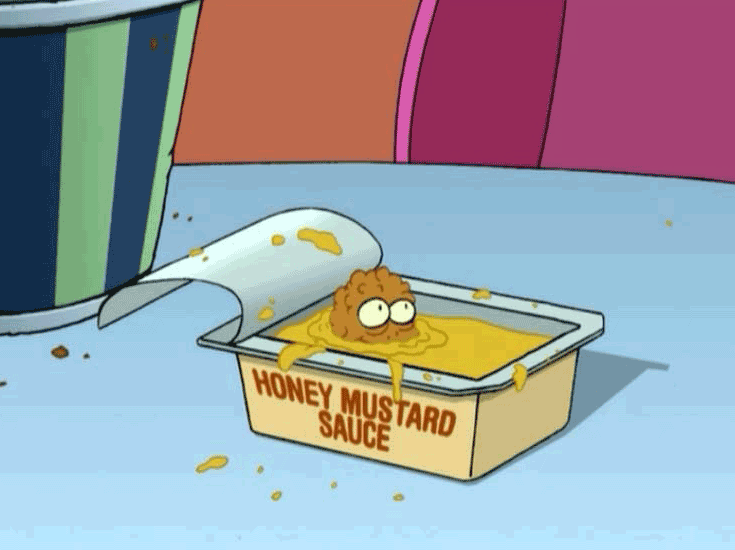

Popplers

Description
Discovered by Turanga Leela on an M-Class planet, popplers are a delicious snack sold by Fishy Joes's. Over 190 billion sold!
Ingredients
- 1 tbsp+ 1 tsp kosher salt, (divided)
- 1 tsp baking soda
- 2 lbs medium small shrimp (shelled & deveined)
- 2 qts frying oil
- 1/2 cup unsweetened coconut, processed into fine crumbs
- 1/2 cup panko breadcrumbs
- 1/2 cup breadcrumbs
- 1/2 cup cornflakes (crushed)
- 2 2/3 cup flour (divided)
- 1/4 cup cornstarch
- 1 tsp kosher salt
- 1/4 tsp cayenne pepper
- 1 tsp baking powder
- 1 cup mild lager (cold)
- 1 large egg
- 1/4 cup coconut milk
- Zest of 1 lime
Directions
- In a small bowl, whisk together 1 tablespoon of salt and baking soda.
- Add shrimp to a large bowl and sprinkle with salt mix. Folt to distribute dry brine, set in fridge for 30 min - 1 hour.
- Heat frying oil to 375 F in a high walled skillet. Prepare a large rimmed baking sheet with a wire rack and a layer of paper towels.
- In a wide, shallow bowl, combine 1 cup of flour and 1 teaspoon of salt. Whisk and set aside.
- In another wide bowl, combine coconut, panko, breadcrumbs, cornflakes, 1/2 cup of flour, and cornstarch, whisk together, and set aside.
- In a medium bowl, whisk together the remaining flour, cayeene, and baking powder. In a large bowl, combine beer, egg, coconut milk, and lime zest, then whisk until homogenous.
- Add dry mix from the previous step to the wet & whisk until combined with some limps sitll remaining. The consistancy should be like wet paint.
- Dredge the shrimp first in the flour, then the batter, then the coconut/breadcrumb mix.
- Fry the shrimp in batches for 30-60 seconds, until golden brown and crisp. Drain on paper towels.
- Serve with dipping sauces of your choice!
- Avoid Omicron-Persei 8 at all cost.
Home